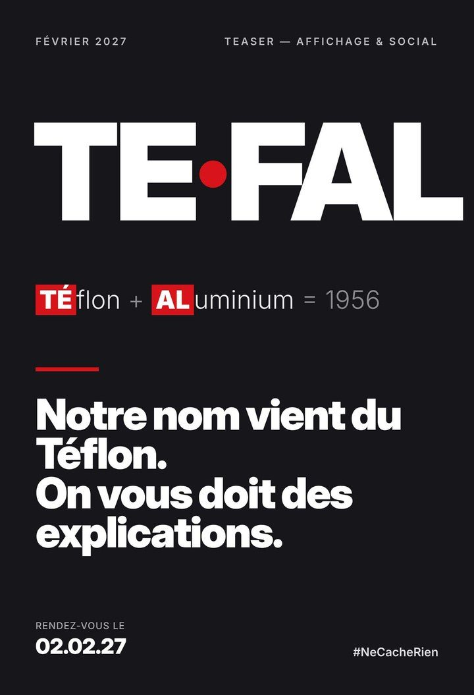
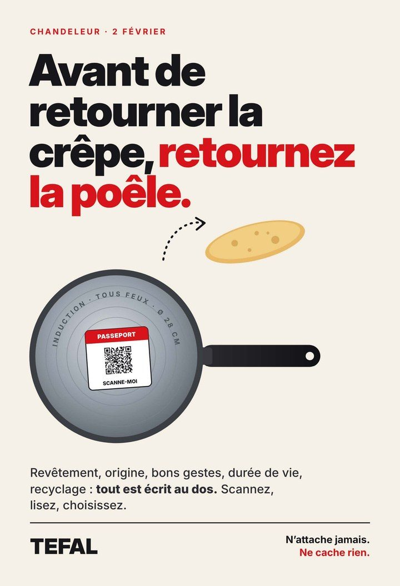
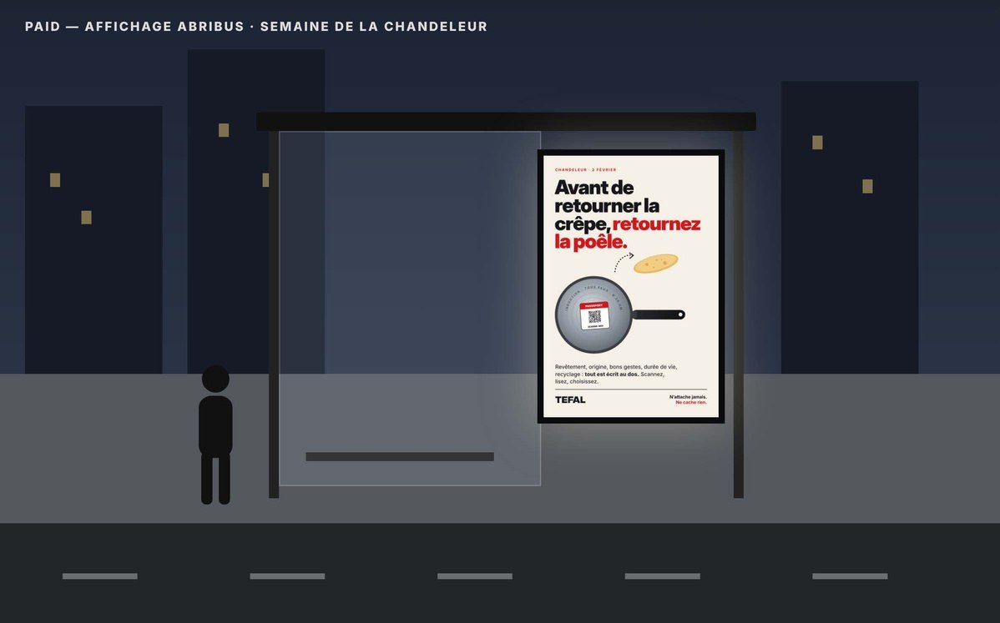
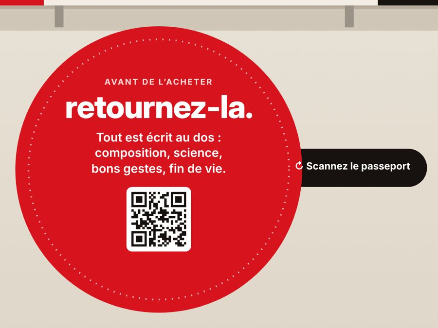
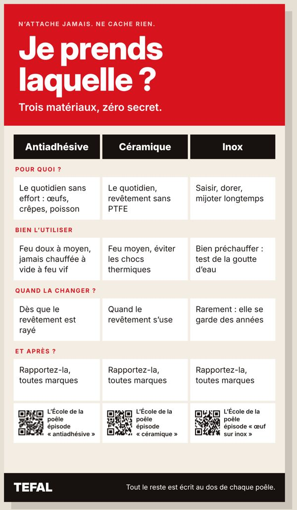
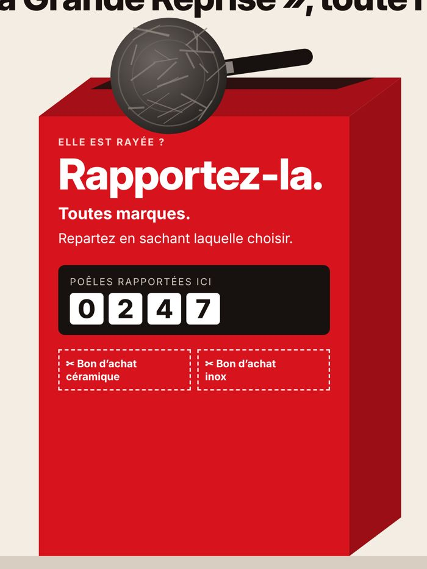
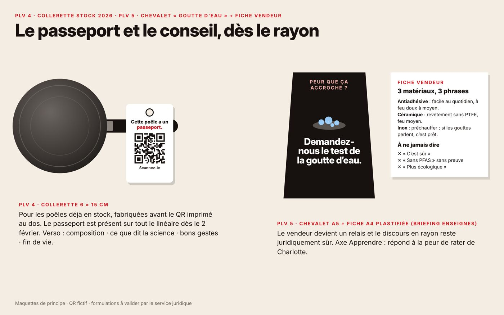
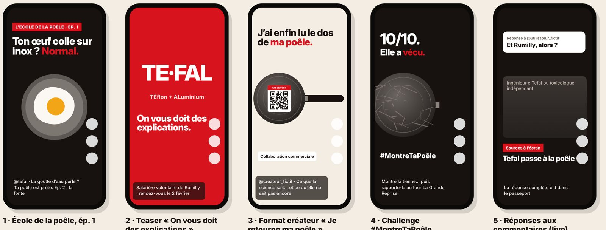
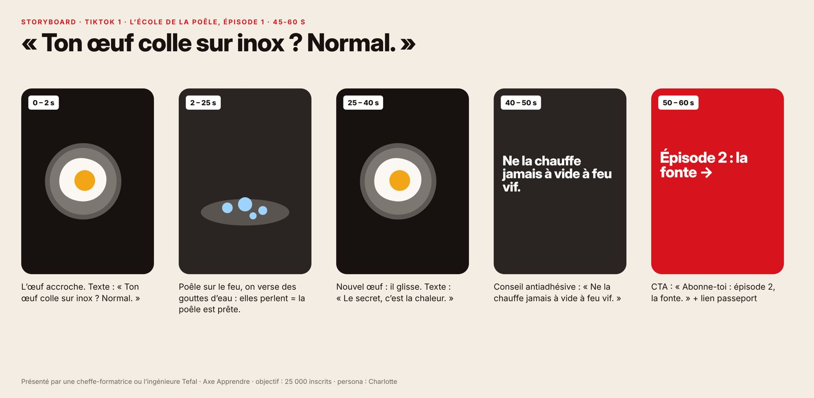

Analyse
Analyser le contexte et le marché de l’annonceur
Preuve : brief, PESTELE, benchmark, mapping, SWOT.
Voir le diagnostic →· ·
· Oral :
Passeport de compétences
Chaque savoir-faire renvoie à la partie du dossier qui le prouve.
Analyse
Preuve : brief, PESTELE, benchmark, mapping, SWOT.
Voir le diagnostic →Étude
Preuve : 5 méthodes complémentaires, de la netnographie au test A/B.
Voir l’étude →Compétence 4
Preuve : l’outil RADAR, ses 5 étapes et son tableau de bord.
Voir la veille →Stratégie
Preuve : positionnement, objectifs SMART, cibles, personas, message.
Voir la stratégie →Dispositif
Preuve : dispositif PESO, phases, budget de 500 k€, risques.
Voir le dispositif →Compétence 8
Preuve : affiches teaser et Chandeleur, PLV, concepts TikTok.
Voir les visuels →01 · Ce que nous avons compris
« Reconquérir la confiance et l’attention des 20-30 ans en transformant une controverse en opportunité de réassurance et de modernité, plutôt qu’en évitant le sujet. »
Tout le monde connaît Tefal : c’est la confiance qui manque.
Fabrication à Rumilly, fin de vie des poêles, réglementation.
Préparer la cible au « monde d’après » avant qu’il ne s’impose.
Les salariés sont les premières preuves humaines.
Problématique
Comment faire de Tefal la marque d’ustensiles la plus transparente aux yeux des 20-30 ans, alors que son nom même est associé au Téflon et que sa dernière parole publique a été contestée ?
02 · Diagnostic
À cela s’ajoute une rupture réglementaire : restriction européenne des PFAS, fin des allégations écologiques vagues, et un État qui conseille l’inox et la fonte. La confiance vérifiable devient un critère d’achat.
| Concurrent | Sa seule promesse |
|---|---|
| GreenPan | la santé |
| Cookut | le fun |
| Cristel | le made in France |
| de Buyer | l’expertise |
| Le Creuset | le statut |
Aucun ne dit ce que contiennent ses poêles, ni n’apprend à cuisiner sur plusieurs matériaux.
Enjeu
Transformer la légitimité historique de Tefal en preuve de transparence, avant que la réglementation et les concurrents ne lui imposent le sujet.
Quatre règles pour tout le plan
03 · Étude
| Méthode | Pourquoi |
|---|---|
| Documentation + veille | Savoir ce que disent déjà les données publiques |
| Questionnaire, n = 400 | Mesurer (± 5 points) |
| 12 à 15 entretiens | Comprendre le pourquoi |
| Netnographie, 500 commentaires | Observer sans biais de déclaration |
| Test A/B « rassurer » / « tout montrer » | Mesurer un comportement réel |
Budget : 15 k€ inclus dans les 500 k€, dont le même questionnaire refait à 6 et 12 mois.
Insight
Les 20-30 ans veulent savoir ce qu’il y a dans leurs objets, mais personne ne leur dit ce qu’il y a dans une poêle, et quitter l’antiadhésif fait peur.
Le frein n’est pas l’envie. C’est la peur de rater.
03 · Veille
Le détecteur de fumée. Repérer une décision, une action d’ONG ou un reportage avant la crise.
La revue de presse. Trouver les sujets, les questions et les bons moments pour parler.
Le thermomètre. Suivre le sentiment et la part de voix.
| Signal repéré | Décision |
|---|---|
| Mise en demeure : réponse attendue en janvier 2027 | Phase 0 : l’engagement avant la publicité |
| Registre européen du passeport numérique ouvert | Passeport « Scanne ta poêle » |
| Hausse des recherches « poêle inox » | L’École de la poêle |
| Enquêtes consommateurs à la Chandeleur | Lancement le 2 février 2027 |
04 · Stratégie de communication
Positionnement : pour les 20-30 ans qui s’équipent et veulent cuisiner sain sans avoir à deviner, Tefal est la marque française d’ustensiles qui met tout sur la table : matériaux, preuves, limites.
Axe 1
Tout dire au dos de la poêle et en direct. Contre la méfiance.
Axe 2
Rendre chaque matériau facile. Contre la peur de rater.
Axe 3
Transformer la vieille poêle rayée en geste utile.
Cœur de cible : les 20-30 ans qui s’équipent pour leur premier logement. Relais : créateurs, journalistes, vendeurs. Interne : salariés de Rumilly et Tournus.
Étudiante à Lille, poêle rayée héritée.
« Ma poêle est-elle encore bonne ? »
Vient d’emménager à Toulouse.
« Je prends laquelle ? »
Est passée à l’inox et a tout raté.
« Montrez-moi, apprenez-moi. »
04 · Dispositif PESO
Owned · 55 k€
Passeport « Scanne ta poêle » au dos de chaque poêle, L’École de la poêle (12 épisodes), newsletter et PLV.
Paid · 270 k€
Teaser « TE·FAL. On vous doit des explications. », Chandeleur, social ads (TikTok en tête), créateurs.
Earned · 25 k€
Live mensuel « Tefal passe à la poêle », manifeste, Open Factory à Rumilly sous condition.
Shared + hors-média · 70 k€
#MontreTaPoêle et le tour « La Grande Reprise » dans 6 villes étudiantes.
Contenus complémentaires
Touchez une image pour l’agrandir.









04 · Calendrier et budget
Rouge : achat d’espace et créateurs (Paid, 54 %). Gris : autres postes.
05 · Risques
| Scénario | Réponse prévue |
|---|---|
| Pas d’engagement PFAS daté | On ne lance pas « Ne cache rien » : repli sur l’École et la Reprise |
| Une ONG dénonce un « transparency-washing » | Invitation au live, données publiées, réponse sous 24 h |
| Nouvelle mesure défavorable à Rumilly | Publiée dans le passeport avant la presse |
| Interdiction européenne du PTFE | Le concept reste valable : la cible a été préparée |
À propos
· · ·
. Soutenance orale : .
Dossier réalisé dans le cadre d’un exercice pédagogique. Tefal est une marque du Groupe SEB ; ce travail n’est pas une commande de la marque. Les maquettes sont des propositions : QR codes, pseudonymes et chiffres illustratifs y sont fictifs.